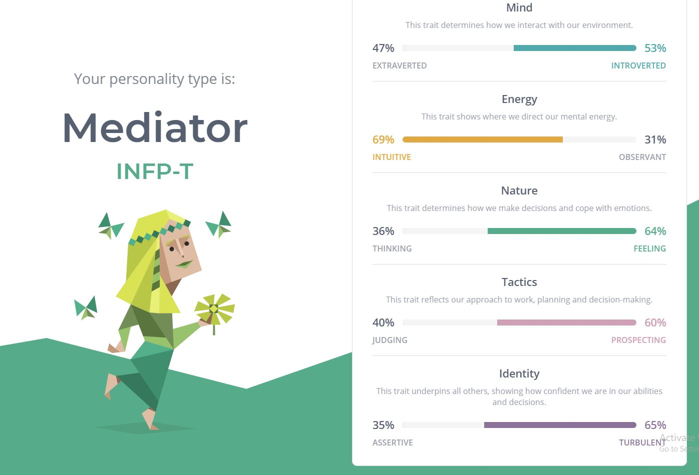
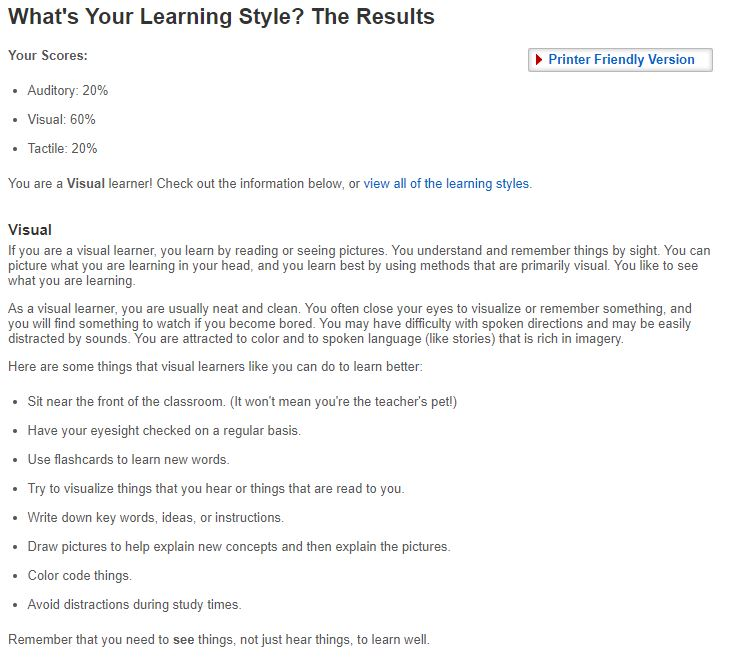
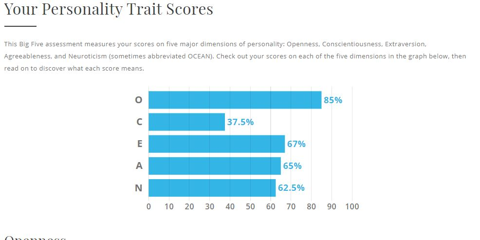

Down below I have some personality tests I have completed, as well as how these tests reflect on my personality and how they would affect my teamwork.
Here is a Myer-Briggs test.
Here is a learning style test.
Here is a test based on the 'Big 5', or 'OCEAN' personality test
From the tests I have done I can reflect that I am more of an introverted person with a lot of creativity. As well as being a mostly visual learner. Being an introverted does make sense as in most scenarios involving new people I am very shy and self-kept, however when I’m friends with someone my personality does a full 180 turn and I become very extroverted and talkative. Being a visual learner means that I apparently learn through reading and seeing pictures. It says I can be distracted by sounds which is definitely true, as I try to focus on sounds around me as I hear them taking away from my current focus.
These qualities mean that during a team based project, if the people I am working with are new and I’m unfamiliar with them I would start off quite poorly as I wouldn’t be able to vocalise my opinions without worry of negative opinion from my work mates. However once I get to know my work mates and fit in with them I would become a very chatty and extroverted person, being able to put my input in without worry. If though after I had put forward a ‘bad’ idea that if it responded poorly with aggression (such as being rude) by my teammates, I would recess back, not wanting to put forward ideas again.
When forming a team (uni wise) I should take into consideration that everyone is mostly in the same boat; little experience doing these sorts of things and that we will all need to come together to adequately finish the project. I would have to push past the initial stage of being shy so that I can contribute more to my team.